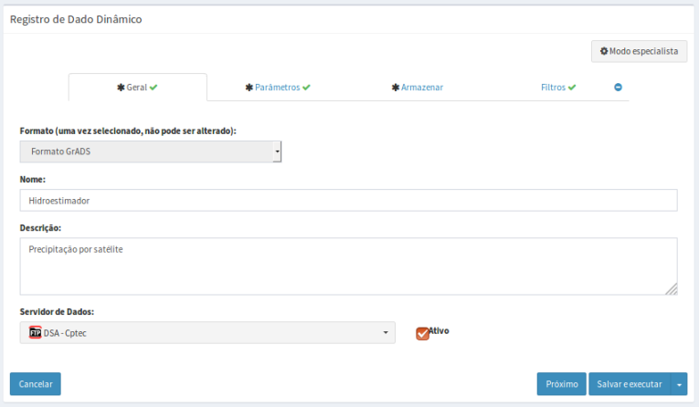

Adicionar Dado Dinâmico
Para adicionar um novo dado dinâmico é necessário ter um projeto ativo. No menu de opções selecione “Dados Dinâmicos” para que a lista de dados disponíveis seja apresentada na área de trabalho. Clique no botão “ + ” para adicionar novo dado. Utilize o botão “Salvar” para salvar o dado dinâmico. Não é permitido nomes de dados em duplicidade. Botão “Cancelar” volta à tela anterior sem salvar o dado. A Figura 2.13 mostra a área de trabalho para adicionar novo dado dinâmico. Detalhes de cada campo a seguir.

Figura 2.13 – Módulo de Administração: Adição de dado dinâmico - Matriz
* Como há diferença consideráveis no preenchimento para cada tipo de dado dinâmico, os procedimentos estão divididos em:


Created with the Personal Edition of HelpNDoc: Free Kindle producer